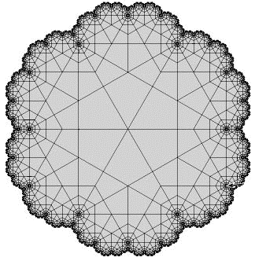

Purpose To produce a tiling of a region having a fractal perimeter.
Materials Paper, straightedge, compass, pencil
Conclusion Unlike tilings of the Poincare Disc, here we have generated a fractal perimeter.
Exercise Can you devise a variation on this method that will yield a another fractal perimeter?